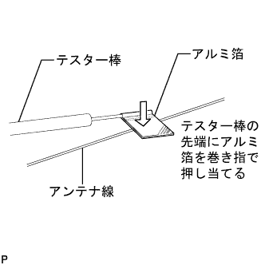
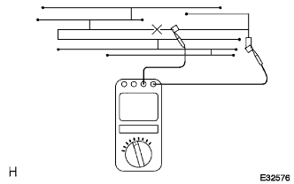
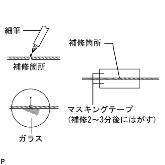

Window Glass [Printed Antenna] Repair |
| 1. Inspect Window Glass [Printed Antenna] |
 |
To avoid damaging the printed antenna, wrap aluminum foil around the tip of the tester probe as shown in the illustration and perform the inspection while holding the aluminum foil with your finger.
When cleaning dirt from the glass with a cloth etc., use a dry, soft cloth and wipe along the direction of the antenna so as not to damage the antenna.
Do not use ordinary detergents or glass cleaners.
 |
Using SST (Toyota electrical tester), touch the tester probe to the printed antenna and move it, and check for any points where continuity is lost.
| 2. Repair Window Glass [Printed Antenna] |
Clean the broken area with white gasoline.
 |
Thoroughly stir the repair agent, apply a small amount to a fine brush, and apply it to the area to be repaired.
If the area to be repaired is long, apply masking tape and then apply the repair agent.
Remove the masking tape 2 to 3 minutes after the repair.